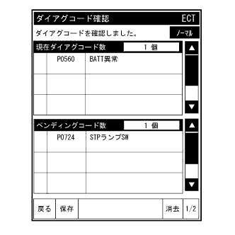
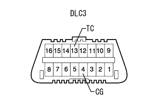
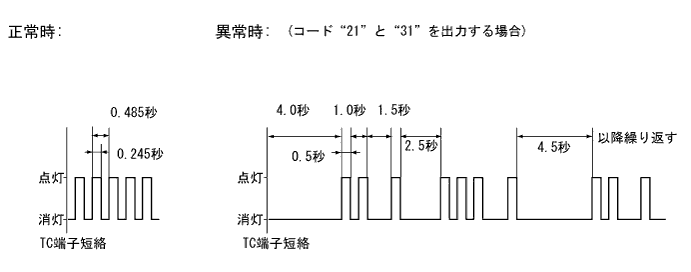
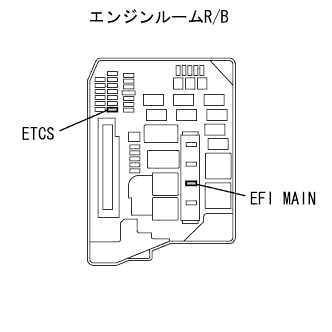

Electronically Controlled Automatic Transaxle [ECT] (U660E) DTC Check / Clear |
Connect SST (TaSCAN) to DLC3.
Following the SST (TaSCAN) screen display, select Main Menu [Diagnosis] → Diagnosis Menu [Powertrain] → [ECT] → System Diagnosis Menu [Mode Change], and select normal mode or check mode.
 |
Following the SST (TaSCAN) screen display, select Main Menu [Diagnosis] → Diagnosis Menu [Powertrain] → [ECT] → System Diagnosis Menu [DTC Freeze Frame Data], and check the DTCs.
| Display Item | Description |
|---|---|
| Number of Current DTCs |
|
| Number of Pending Codes |
|
 |
Turn IG OFF.
Using SST (diagnosis check wire No.2), connect between terminals 13 (TC) ←→ 4 (CG) of the DLC3.
Turn IG ON.
Read the DTC (number of blinks of the check engine warning light).

| Base-16 | Number of Blinks |
|---|---|
| A | 10 |
| B | 11 |
| C | 12 |
| D | 13 |
| E | 14 |
| F | 15 |
Turn IG OFF.
Disconnect terminals 13 (TC) ←→ 4 (CG) of the DLC3.
Using SST (TaSCAN), display the [Diagnosis Menu / ECT] screen according to the screen display, and select [DTC].
Select [Clear] on the screen to clear the data.
 |
After repairing the malfunctioning area, remove the EFI MAIN fuse and ETCS fuse in the engine room for 60 seconds or more, and then reinstall them.
Using SST, connect terminals 13 (TC) ←→ 4 (CG) of DLC3.
Turn IG ON.
Check that the normal code is output.
Turn IG OFF.
Disconnect terminals 13 (TC) ←→ 4 (CG) of the DLC3.